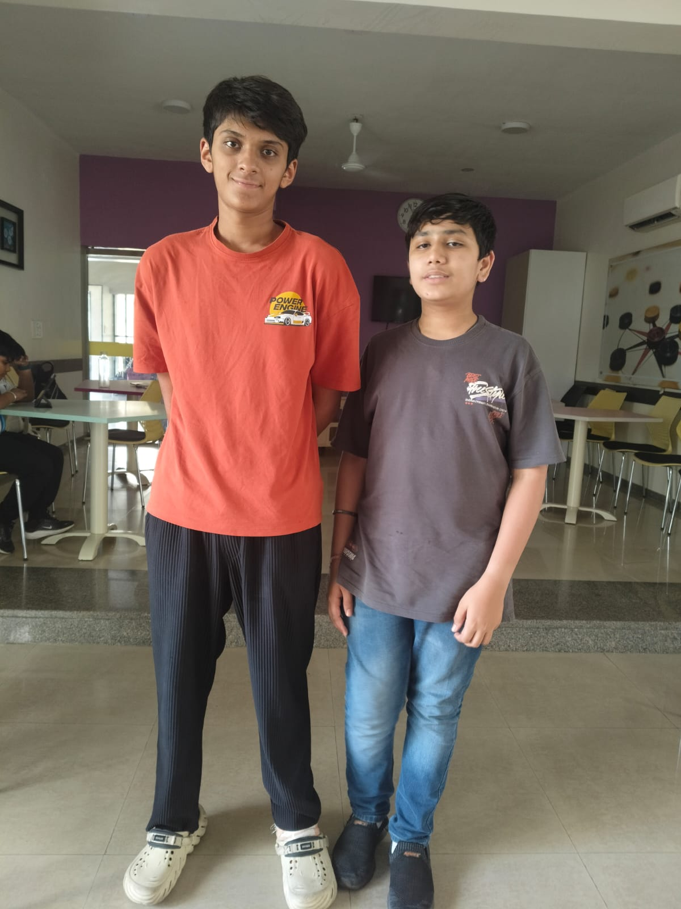
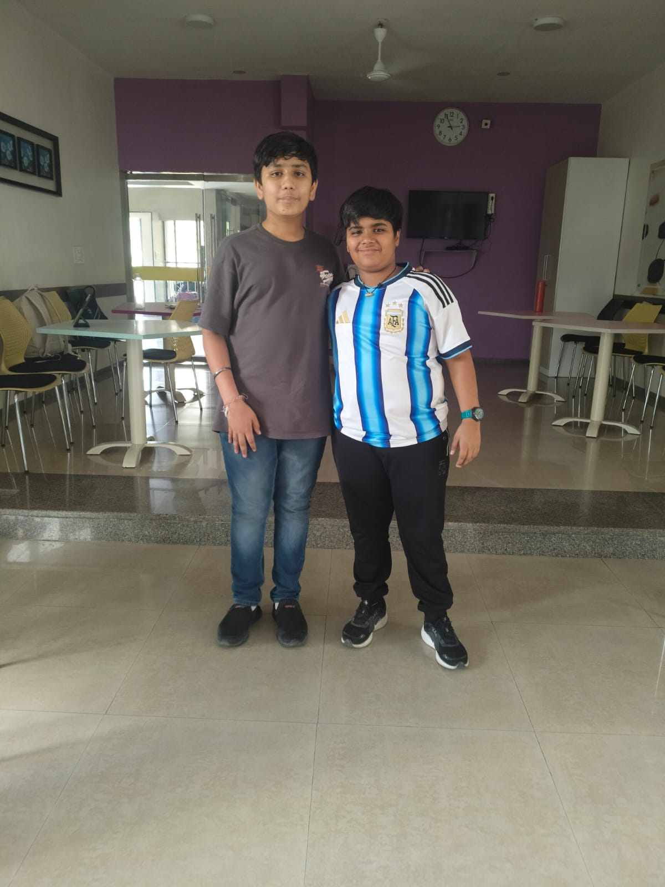

My School Memories
School life is not only about academics but also about friendships, experiences, and memories that shape who we are. At GD Goenka International School, I have made wonderful friends and participated in activities that have enriched my life. The gallery section of this website is dedicated to those moments. Each photo represents a story — whether it is a classroom discussion, a sports event, or a casual day with friends. These images remind me of the importance of teamwork, laughter, and shared experiences. They capture the essence of my journey as a student, highlighting the balance between learning and enjoying life. I believe that memories are as valuable as achievements, and this gallery is a way to preserve them. Looking back at these photos, I feel grateful for the opportunities I have had and the people who have supported me. This section is not just a collection of images but a reflection of my growth, happiness, and the bonds I have built over the years. Each picture is a reminder that education is not only about books but also about the friendships and experiences that make the journey meaningful. I hope that when you view these images, you can see the joy, energy, and spirit of my school life that continues to inspire me every day.

